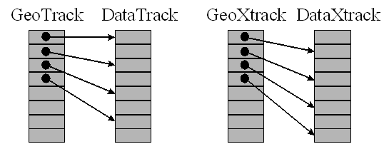

This function defines monotonic mapping between the geolocation and data dimensions. Typically the geolocation and data dimensions are of different size (resolution). This function establishes the relation between the two where the offset gives the index of the data element (0-based) corresponding to the first geolocation element and the increment gives the number of data elements to skip for each geolocation element. If the geolocation dimension begins “before” the data dimension, then the offset is negative. Similarly, if the geolocation dimension has higher resolution than the data dimension, then the increment is negative. A typical reason for failure is an incorrect geolocation or data dimension name.
Result = EOS_SW_DEFDIMMAP(swathID, geodim, datadim, offset, increment)
Returns SUCCEED (0) if successful and FAIL (–1) otherwise.
Swath id (long) returned by EOS_SW_CREATE or EOS_SW_ATTACH.
Geolocation dimension name (string).
Data dimension name (string).
The offset (long) of the geolocation dimension with respect to the data dimension.
The increment (long) of the geolocation dimension with respect to the data dimension.
None
In this example, we establish the following:
| • | The first element of the GeoTrack dimension corresponds to the first element of the DataTrack dimension and the data dimension has twice the resolution of the geolocation dimension. |
| • | The first element of the GeoXtrack dimension corresponds to the second element of the DataTrack dimension and the data dimension has twice the resolution of the geolocation dimension. |
status=EOS_SW_DEFDIMMAP(swathID, "GeoTrack", "DataTrack", 0, 2)
status=EOS_SW_DEFDIMMAP(swathID, "GeoXtrack", "DataXtrack", 1, 2)
|
 |
|
5.2 |
Introduced |